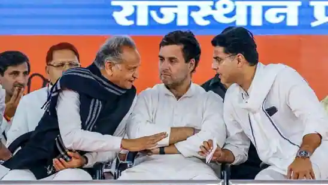
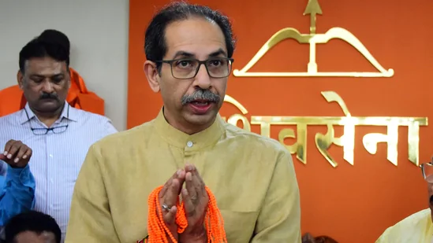
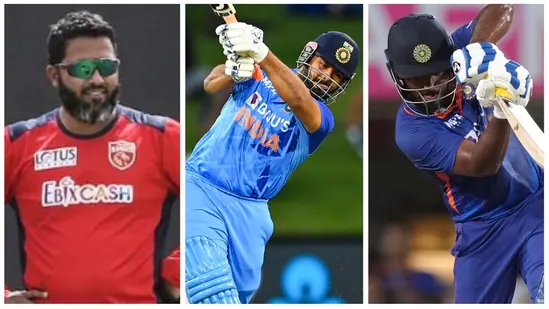
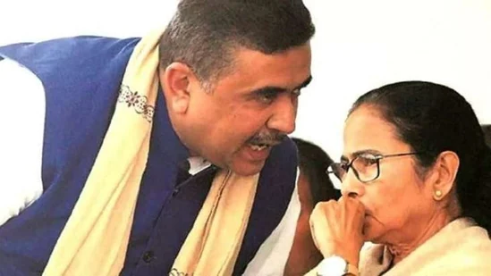
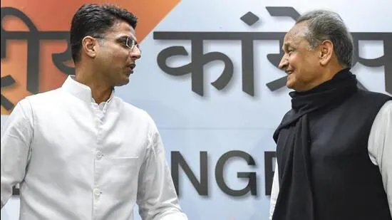

Rajasthan chief minister Ashok Gehlot had called Pilot a traitor, who betrayed the party.
Bhagat Singh Koshyari had said last week during an event in Aurangabad that Chhatrapati Shivaji Maharaj was an icon of "olden days". His statement had drawn flak from NCP and Uddhav Thackeray-led Shiv Sena faction.
Uruguay vs South Korea, highlights FIFA World Cup 2022: Luis Suárez-starrer Uruguay played out a goalless draw with South Korea in its Group H opener of the FIFA World Cup 2022 on Thursday.
When asked if there was a chance to get Suryakumar Yadav play in the Big Bash League - Australia's T20 league - Maxwell said they will have to sack every player on the roster to gather the amount needed to get the Indian Suryakumar Yadav on board.
Former Indian opener Wasim Jaffer has sparked a massive debate on Twitter after predicting India's playing XI for the 1st ODI against New Zealand on Thursday.
Mamata Banerjee met with Suvendu Adhikari for the time since her former aide quit the Trinamool Congress and joined the BJP ahead of the 2021 Bengal assembly election.
Tamannaah Bhatia casts a spell on her fans with her latest look in a black structured saree by ace Indian designer Manish Malhotra.

Janhvi Kapoor dropped some more dreamy photos from her recent visit to Saudi Arabia's Al-Ula. Apart from the stunning views, Janhvi's looks in the pictures also grabbed attention. (All pics: Janhvi Kapoor/ Instagram)
Thanksgiving is an official holiday in the United States, observed on the last Thursday of November. It dates back to the Civil War when President Abraham Lincoln proclaimed the day to express gratitude and seek healing.

Targeting Rajasthan chief minister Ashok Gehlot for using words such as ‘gaddar’ (traitor) for senior state Congress leader Sachin Pilot, the party’s steering committee member Harish Choudhary on Friday urged that one must maintain “dignity” in political discourse
Congress general secretary Priyanka Gandhi, Jairam Ramesh, Rajya Sabha MP Digvijaya Singh, MP Congress Committee president Kamal Nath and others participated in the yatra in MP
A call about the blaze was received at 9.19 pm on November 24 and 40 fire tenders were rushed to the spot, according to the fire department.
Kajol shows how to look royal in a lehenga this wedding season through her latest Instagram post